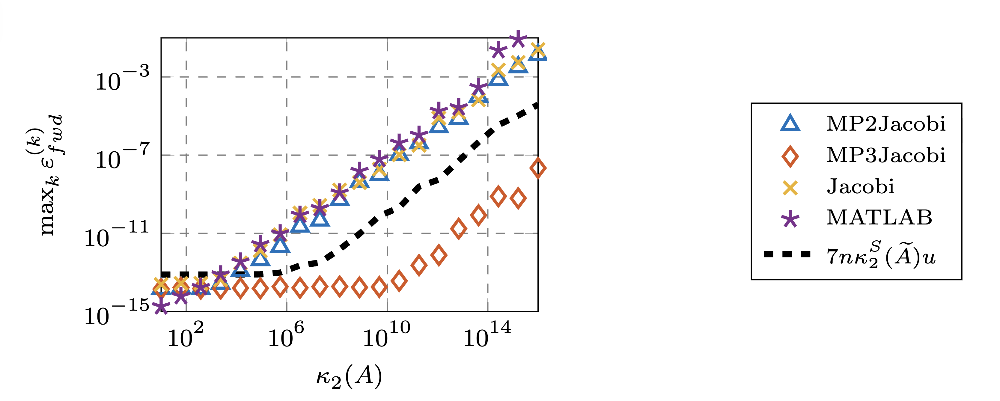

Computing accurate eigenvalues using a mixed-precision Jacobi algorithm
Nicholas J. Higham, Françoise Tisseur, Marcus Webb, and I have uploaded to the arXiv our paper "Computing accurate eigenvalues using a mixed-precision Jacobi algorithm".
arXiv DOI MATLAB and Julia code Julia package
This paper builds on the famous result by Demmel and Veselić on the high accuracy of the Jacobi algorithm, in which they proved that for \(A \in \mathbb{R}^{n\times n}\), if \(\lambda_{k}(A)\) denotes the \(k\)-th largest exact eigenvalue of \(A\) and \(\widehat{\lambda}_{k}(A)\) is the \(k\)-th largest eigenvalue computed by the Jacobi algorithm with a suitable stopping criterion, then
\[\left| \frac{\widehat{\lambda}_{k}(A) - \lambda_{k}(A)}{\lambda_{k}(A)} \right| \le p(n)\,u\,\kappa_{2}^{S}(A), \]where \(p(n)\) is a low-degree polynomial, \(u\) is the unit roundoff of the working precision, and \(\kappa_{2}^{S}(A) = \sigma_{\max}(DAD)/\sigma_{\min}(DAD)\) with \(D = \mathrm{diag}(a_{ii}^{-1/2})\).
Our algorithm
We first construct a preconditioner \(\widetilde{Q}\) using either a spectral decomposition or a tridiagonal reduction computed at low precision. This preconditioner satisfies:
- \(\widetilde{Q}^{T}A\widetilde{Q}\) has small off-diagonal entries, and
- \(\|\widetilde{Q}^{T}\widetilde{Q} - I\|_{2}\) is of order \(u\).
We then apply the Jacobi algorithm at working precision to \(\widetilde{Q}^{T}A\widetilde{Q}\), which is evaluated at high precision. We refer to this approach as the mixed-precision preconditioned Jacobi algorithm.
Let \(\widetilde{A} = \widetilde{Q}^{T}A\widetilde{Q}\). The eigenvalues computed by applying our algorithm to \(\widetilde{A}\) satisfy
\[\left| \frac{\widehat{\lambda}_{k}(\widetilde{A}) - \lambda_{k}(A)}{\lambda_{k}(A)} \right| \le p(n)\,u\,\kappa_{2}^{S}(\widetilde{A}). \]Through this procedure, \(\kappa_{2}^{S}(A)\) is effectively replaced by \(\kappa_{2}^{S}(\widetilde{A})\), which is often much smaller. For example, if \(\|A - \mathrm{diag}(A)\|_F/\min_i(\widetilde{a}_{ii}) < 1/2\), then \(\kappa_{2}^{S}(\widetilde{A}) < 3\).
Why high precision?
A key feature of our algorithm is the use of high-precision matrix–matrix multiplication. With sufficiently high precision, we can overcome the large componentwise forward errors that would otherwise arise when forming \(\widetilde{Q}^{T}A\widetilde{Q}\).
Numerical experiment
We compare four algorithms:
(a) MP2Jacobi -- our algorithm but with the matrix product \(\widetilde{Q}^{T}A\widetilde{Q}\) evaluated at working precision,
(b) MP3Jacobi -- our proposed algorithm (matrix product evaluated at high precision),
(c) Jacobi -- the Jacobi algorithm of Demmel and Veselić, and
(d) MATLAB -- eig routine.
The test matrices are generated by:
gallery('randsvd', 100, -kappa, 5);
with condition numbers \(\kappa\) varying from \(10\) to \(10^{16}\).

The results clearly show that our algorithm performs especially well for highly ill-conditioned matrices. For matrices with condition number \(10^{16}\), MP3Jacobi achieves 7 correct digits of accuracy, whereas the other algorithms fail to reach 3 correct digits.